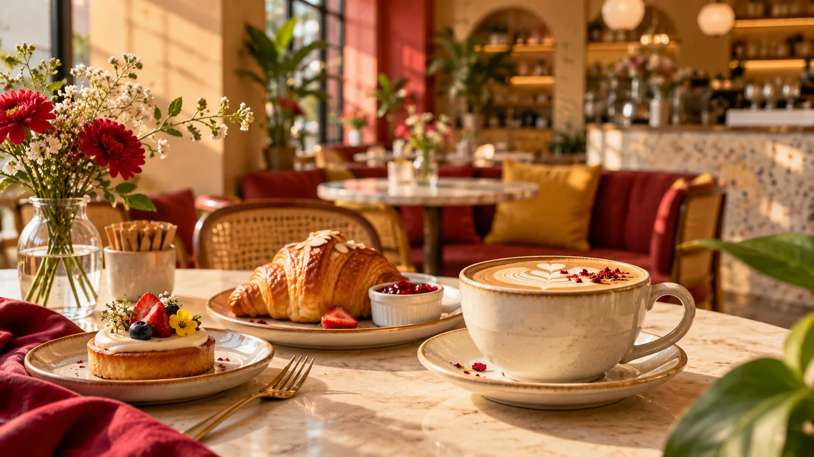

01 / COFFEE
Velvet Latte
Espresso · steamed milk · caramel
₹220COFFEE · BAKES · SLOW MORNINGS
Warm coffee, flaky things, long conversations and a little bit of everyday magic.

FRESH01 / THE PLACE
EMBER & CRUMB is a fictional modern café concept built around simple food, beautiful coffee and unhurried moments.
Designed as a portfolio project, it combines a warm editorial identity with playful interactions and a strong food-first visual language.
Meet the Café ↗02 / HOUSE FAVOURITES
Espresso · steamed milk · caramel
₹220Golden flaky layers baked fresh.
₹160Warm brioche, berries, cream and maple.
₹39003 / AROUND THE TABLE
04 / YOUR TABLE IS WAITING